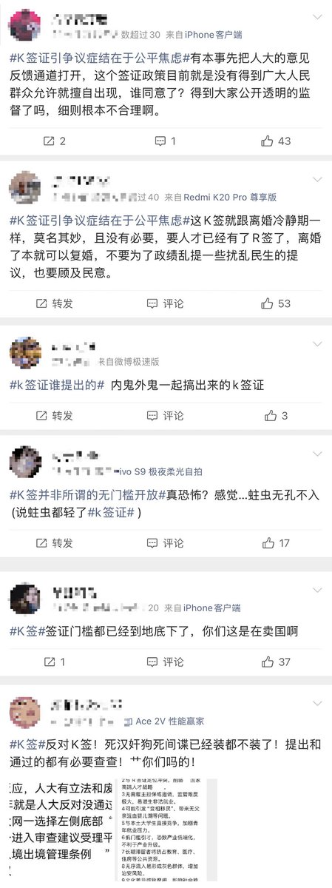
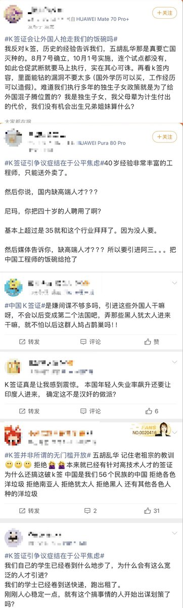
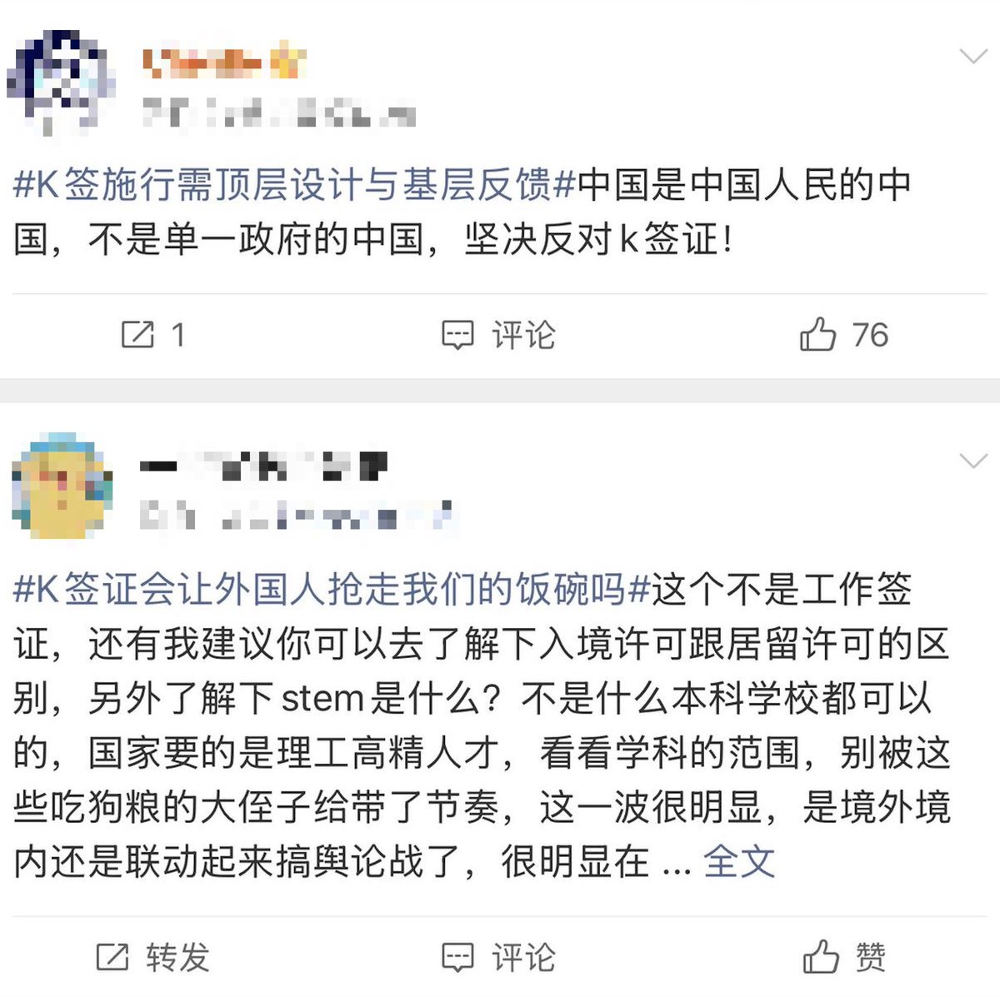

排外的極右翼民粹情緒席卷中文互聯網
不過講真，這就是所謂的歷史迴旋鏢吧——當年華工遠赴重洋，在他國成為「你不幹我幹」的典型代表，因此遭到其他國家勞工的歧視與排斥；結果到了今天，輪到中國本國人「不幹」時，建制要引進「能幹」的外來勞工，中國人自己也終於嚐到了自己那份被取代的恐懼。

不過講真，這就是所謂的歷史迴旋鏢吧——當年華工遠赴重洋，在他國成為「你不幹我幹」的典型代表，因此遭到其他國家勞工的歧視與排斥；結果到了今天，輪到中國本國人「不幹」時，建制要引進「能幹」的外來勞工，中國人自己也終於嚐到了自己那份被取代的恐懼。



距离K签证正式生效仅剩不到10分钟，各类相关词条下已经被清一色的反对声彻底淹没。
有网友怒喊：“中国是中国人民的中国，不是某个单一政府的中国，坚决反对K签证！” https://t.co/NYALSlxhtv https://t.co/zf0wCI5KOk
有网友怒喊：“中国是中国人民的中国，不是某个单一政府的中国，坚决反对K签证！” https://t.co/NYALSlxhtv https://t.co/zf0wCI5KOk